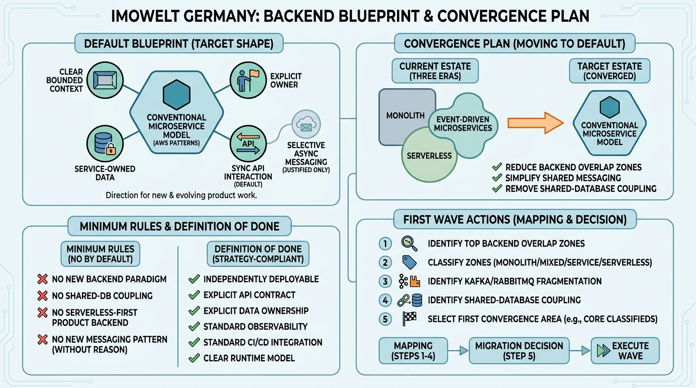

Blueprints and Convergence Plans
Backend Blueprint and Convergence Plan: Toward a Conventional Microservice Default

Image generated by Google Gemini (gemini-3-pro-image-preview)
Blueprints and Convergence Plans

Image generated by Google Gemini (gemini-3-pro-image-preview)